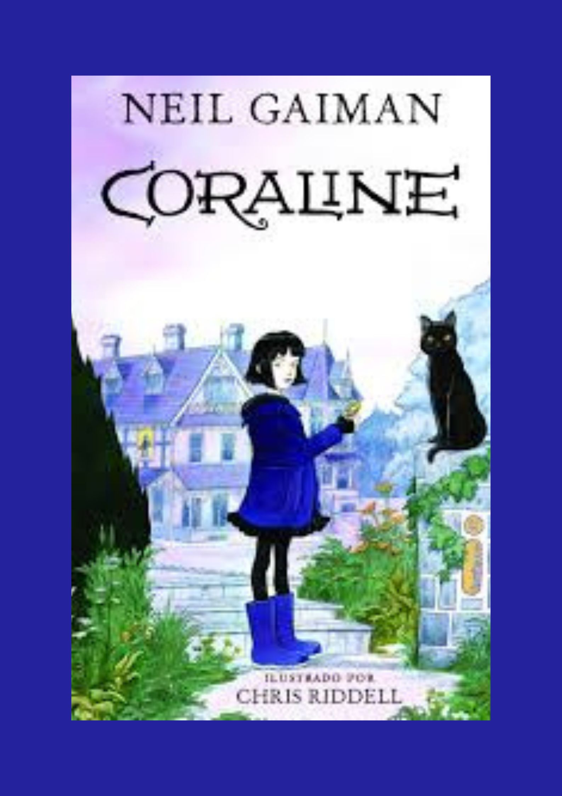

Meus Livros

Em busca de mim é uma história de um menino em busca de sua mãe biolõgica
Nota: 9: história interessante e ilustrações boas, poŕem a história poderia ter sido melhor
Autor/a: Isabel Vieira
Ano de Publicação: 2017
Comprar
Coraline: uma menina que se muda para uma casa nova e descobre uma porta que a leva para uma casa em um mundo paralelo onde existem cópias de seus pais.
Nota:10: histótia cativante, ilustrações boas e boa escrita.
Autor/a: Neil Gaiman
Ano de Publicação: 2020
Comprar
O conto da aia: Uma facção católica toma poder dos Estados Unidos com falsas promessas de restaurar a paz.
Nota:9: boa história e desenvolvimento bom.
Autor/a:Margaret Atwoo
Ano de Publicação: 2017
Comprar
querido diario otario: O diário de uma pré-adolescente que passa por perrengues.
Nota:10: o livro é engraçado e fez várias piadas com o cotidiano da protagonista e tem uma saga de livros.
Autor/a:jim benton
Ano de Publicação: 2007
Comprar